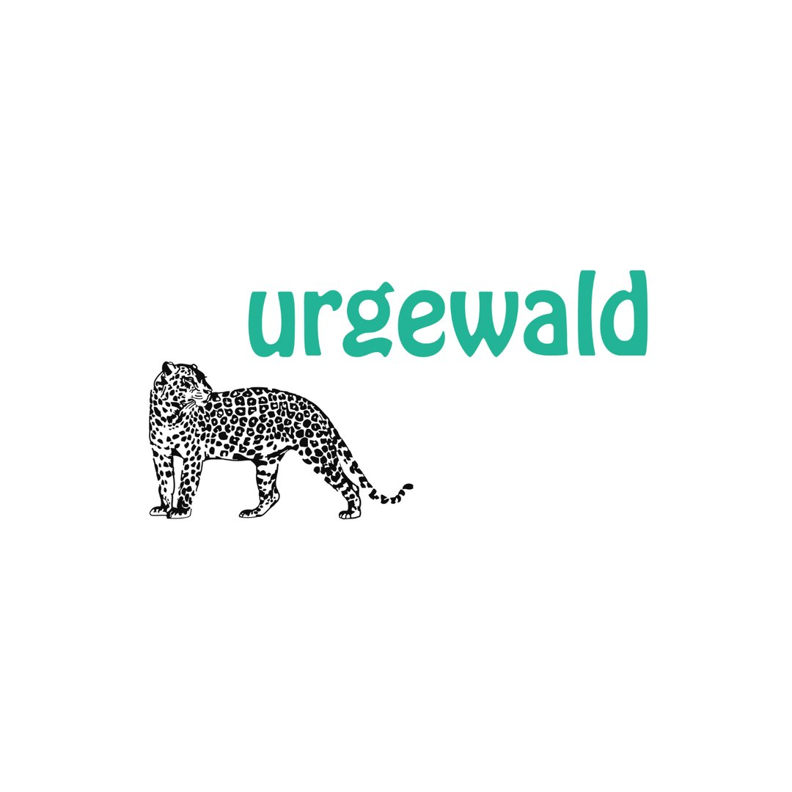

urgewald


Deine Bank investiert in Kohle, Öl und Gas. Wahrscheinlich weißt du es nicht. Swipe für die Zahlen. 👉
3,8 Billionen Euro – so viel haben die 60 größten Banken weltweit seit dem Pariser Klimaabkommen in fossile Energien gesteckt. Darunter auch deutsche Banken: Deutsche Bank, Commerzbank, DZ Bank.
Sie vergeben Kredite an Unternehmen, die neue Kohleminen erschließen, Öl-Pipelines bauen und LNG-Terminals errichten. Gleichzeitig schmücken sie ihre Websites mit Windrädern und ESG-Versprechen.
Was du tun kannst:
🔍 Frag deine Bank, was sie mit deinem Geld macht.
🔄 Wechsle zu einer nachhaltigen Alternative.
📢 Teile diesen Post – denn die meisten wissen es nicht.
Quellen: Banking on Climate Chaos Report 2024, urgewald GOGEL-Datenbank (öffentlich zugänglich)
🔗 Link in Bio: Prüfe deine Bank.
#FollowTheMoney #Klimakrise #DeutscheBank #Greenwashing #urgewald #Bankenwechsel #FossilFinance